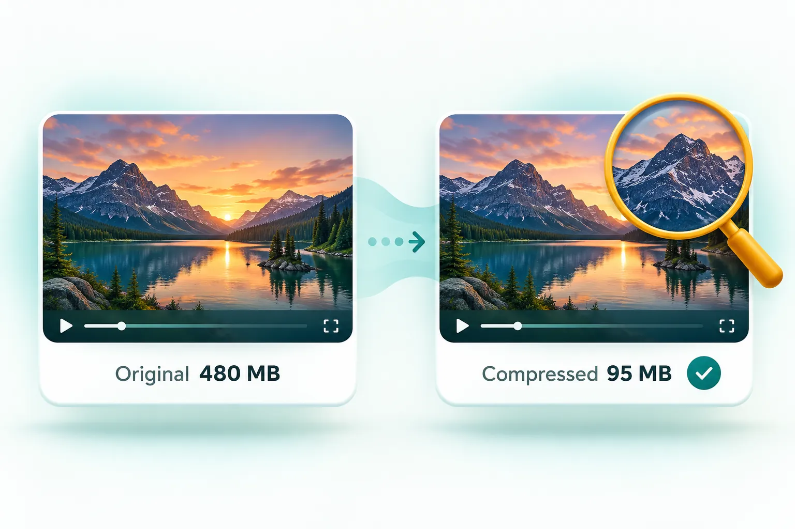

Blog / Quality
How to compress a video without losing quality.

You cannot shrink a video with zero quality loss, but you can make the loss invisible. Re-encode with an efficient codec at a sensible bitrate, keep the resolution matched to where the video will be watched (1080p or 720p for phones), and avoid compressing the same file repeatedly. Phone videos usually shrink by 50 to 80 percent with no visible difference.
Why phone videos are so big in the first place
Phones record at very high bitrates so the footage survives editing. An iPhone records roughly 60 MB per minute at 1080p and around 400 MB per minute in 4K at 60 frames per second. That is far more data than you need to watch the clip on a phone, laptop or TV, which is why careful compression can cut the size dramatically without you noticing.
The four settings that decide file size
1. Bitrate
Bitrate is how much data is used for each second of video, and it is the biggest factor in file size. Halve the bitrate and you roughly halve the file. Too low, and you get blocky patches in dark or fast-moving scenes. For typical phone footage, around 4 to 6 Mbps at 1080p and 2 to 3 Mbps at 720p look clean.
2. Resolution
Resolution is the number of pixels in each frame. Dropping from 4K to 1080p removes three-quarters of the pixels, and on a phone screen the difference is very hard to see. When you have a strict size limit, a lower resolution with enough bitrate almost always looks better than a high resolution starved of bitrate.
3. Codec
The codec is the compression method. H.264 plays on everything and is the safest choice for sharing. H.265 (HEVC), which iPhones use by default, is more efficient but does not play everywhere, for example on some Windows PCs without an extra extension. AV1 is even more efficient but support is still patchy. For files you will share, H.264 in an MP4 is the dependable option.
4. Frame rate
Video recorded at 60 frames per second carries twice as many frames as 30 fps. Unless it is sport or gaming footage, 30 fps looks smooth and saves a lot of space.
Recommended settings by use
| Where the video is going | Resolution | Approximate bitrate | Expected size per minute |
|---|---|---|---|
| WhatsApp / Messenger | 720p | 1.5 to 2.5 Mbps | 12 to 19 MB |
| Email attachment | 720p to 1080p | 2 to 4 Mbps | 15 to 30 MB |
| Website or blog | 1080p | 4 to 5 Mbps | 30 to 38 MB |
| Keeping a smaller archive copy | Original or 1080p | 6 to 8 Mbps | 45 to 60 MB |
The easy way: let the tool choose
If you would rather not think about bitrates, use the free video compressor and pick Smaller file, same look. It re-encodes the video with efficient settings, never returns a file larger than the original, and runs entirely in your browser. When you need a specific size, pick a preset such as WhatsApp or Gmail and it calculates the best bitrate and resolution for you.
Mistakes that cost quality
- Compressing a compressed file. Each pass loses a little more detail. Always start from the original.
- Keeping 4K for phone viewing. It wastes data that could improve the picture at 1080p.
- Using a fixed tiny size for long videos. A 10-minute video will never look good in 10 MB. Trim it or choose a larger limit.
- Ignoring sound. If the clip is silent or the audio is not needed, removing it frees up space for the picture.
Is browser-based compression safe?
Most online video compressors upload your file to their server. CompressPixel processes the video on your own device using your browser's built-in video encoder, so your footage is never uploaded or stored anywhere. That is faster for big files and better for privacy, especially with family or work videos.
Frequently asked questions
Can you compress a video without losing any quality?
Not completely, but with a good codec and sensible bitrate the loss is invisible on normal screens. Phone videos often shrink by 50 to 80 percent with no noticeable difference.
What is the best format for compressed video?
MP4 with H.264 video and AAC audio. It plays on almost every phone, computer, browser and smart TV.
Does lowering resolution reduce file size?
Yes. Going from 4K to 1080p removes about 75 percent of the pixels, which lets the encoder use much less data for a picture that looks almost the same on a phone or laptop.